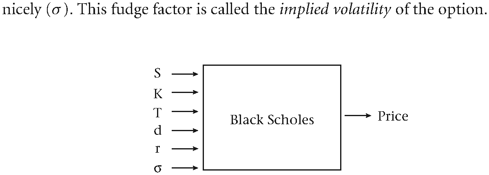
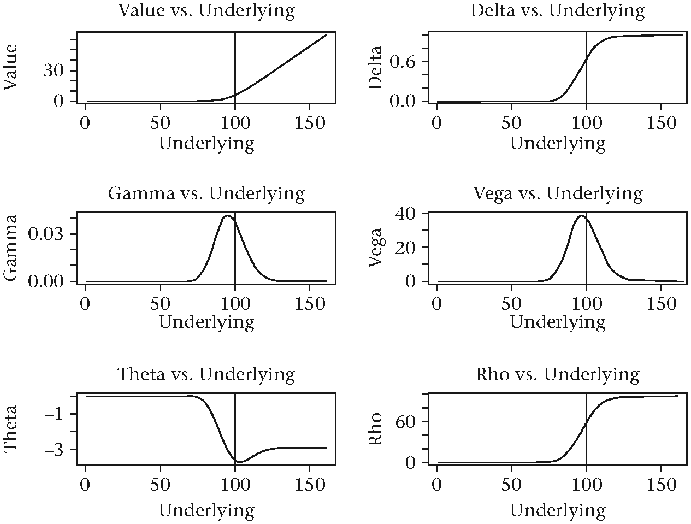
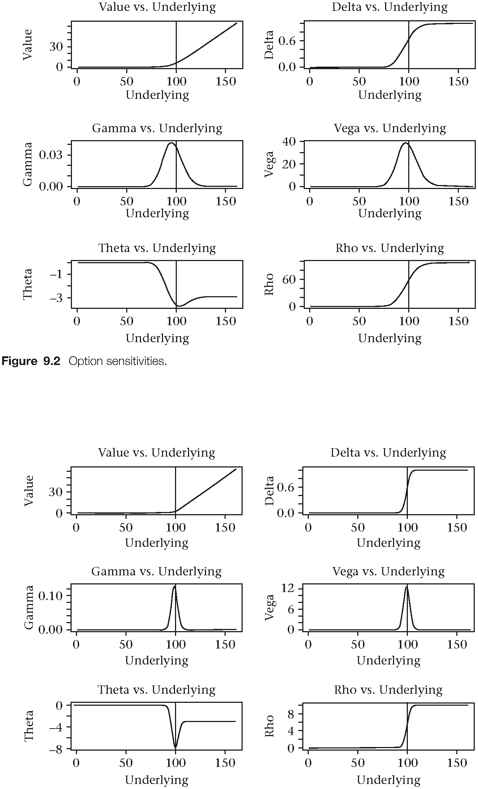
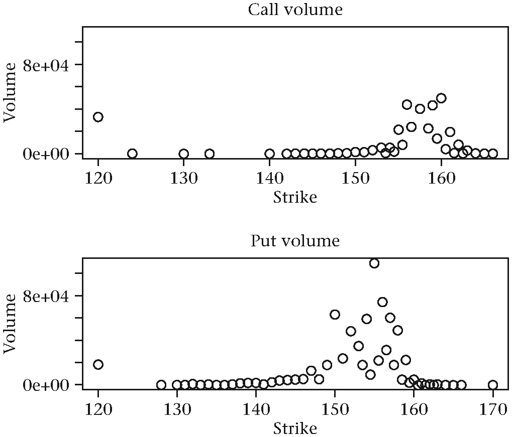
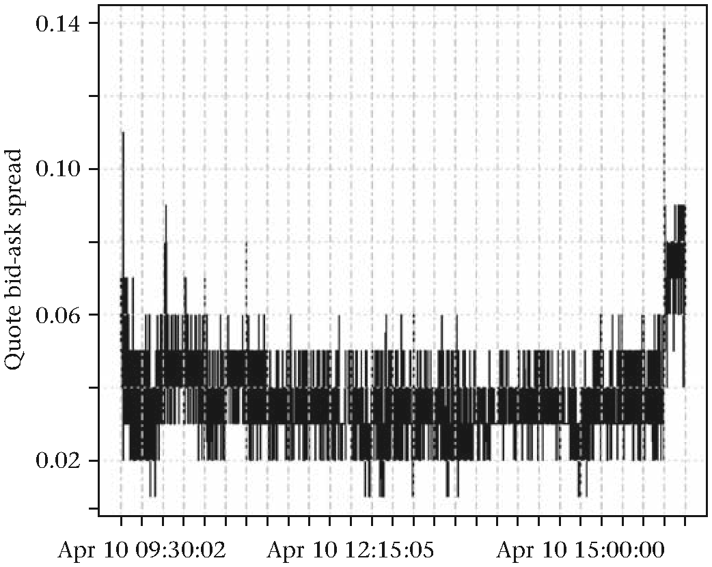
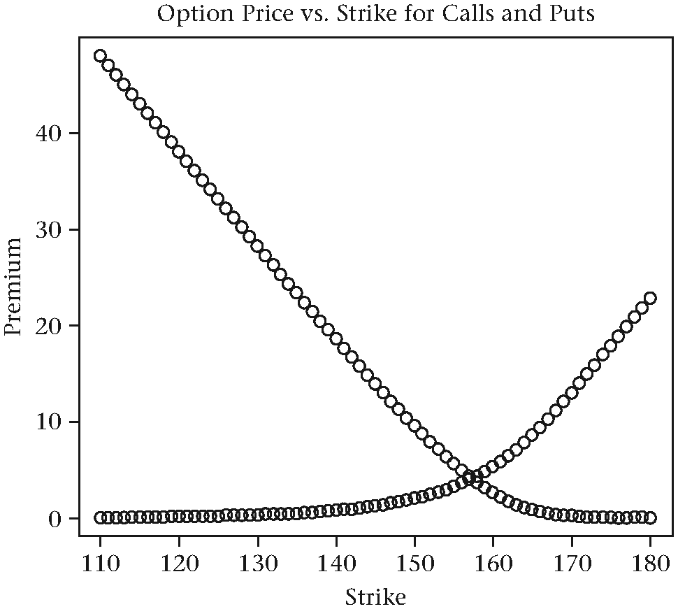
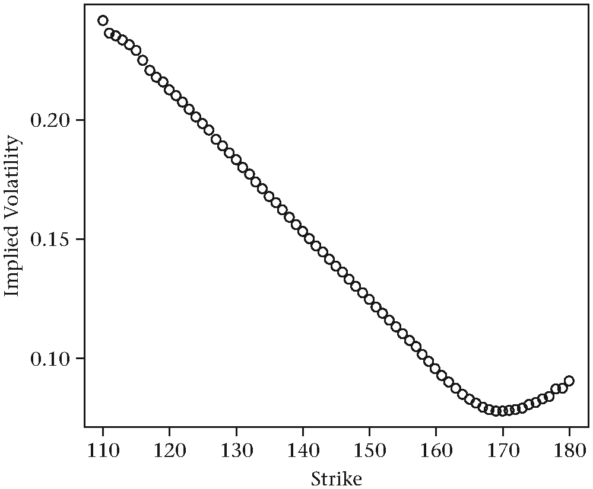

第9章 期权
期权是可交易的衍生品合同，它的价值是从其标的资产中“衍生”出来的。维基百科是这样定义该工具的：“一个期权就是一个合同，该合同赋予期权的买方（期权拥有者）在未来某个确定的时间或此时间之前以预先敲定的价格买入或者卖出某项标的资产或者金融工具的权利，而非义务[130]”。期权与期货合同相似，都是提供了一种在未来的某个时点以现在可敲定的价格买入或者卖出某项特定的实务或者金融资产的机制。然而不同的是，期货合同的持有者负有以商定价格买入或者卖出某项标的资产的义务，而期权则只是提供给了持有者以敲定价格买入或者卖出某项标的资产的“权利”。这种附加的灵活性或者选择权是有一定成本的。买家或者卖家进入期货市场并不需要预付现金，但若想要买入一个期权合同，买家则必须支付一笔溢价款。同样，期权合同的卖方则得以收取这笔溢价费用。
期权的理论价值
期权合同的溢价值是多个变量的函数。这些变量包括双方同意的买入或者卖出某个资产的价格K（也称之为敲定价格，strike price），标的资产的现价（S），期权合同的转换期限（T），从时间为0（也就是现在）算起至到期日为止这段时间内该标的资产可能会以分红等形式产生的现金流（d）,无风险利率值（r）,以及一个容差系数（）。这个容差系数也称作期权的隐含波动率。

图9.1 Black Scholes模型的输入变量
期权的历史
期权，从某种形式上来说是自古有之。亚里士多德讲过一个关于泰利斯的故事（古希腊哲学家，米丽都城人），说泰利斯曾经就在一个橄榄油榨油坊押了一笔钱，目的就是为了确保第二年橄榄丰收的时候能够用上榨油机。因为泰利斯坚信次年的橄榄将比今年更加丰收。因此，他实际上是买入了一个为了使用榨油机的看涨期权。据说他从这笔交易中收益颇丰[51]。再迅速的快进几千年，在1848年，芝加哥交易所（CBOT）正式开门迎客。直到现在， CBOT仍然是世界上最大的期权交易所之一，也被认为是世界上最古老的期权交易所。2007年，CBOT与CME（芝加哥商业交易所）合并。
虽然期权的交易有很长的历史，但直到1973年，期权业界才发生了里程碑式的转变。这一年，Fisher Black和Myron Scholes发表了一篇具有里程碑意义的论文，他们用优雅的数学公式揭示了期权的理论价值。这个公式现在被称作Black-Scholes偏微分方程（PDE），它将期权的市场价格（V）与之前提到的一系列变量参数（S, K, r, T, d, σ）直接联系了起来[27].
期权有很多种形式。其中最常见的两种是“欧式”和“美式”。欧式期权只能在合同规定的到期日行权，美式期权则可以在到期日之前的任意时间行权。这个看似细微的差别，对定价的影响是巨大的。比如说，对于美式看跌期权来说，给定上面的所有变量参数并不能给出一个显式的定价公式。当然，这种情况还可以通过数值方法计算得出，但不能像上面的公式那样给出解析公式。
期权的定价
R中有数个用于期权定价的第三方包，它们提供了针对欧式和美式期权的一系列计算方法，既包括显示解的方法，也包括树形、栈格形以及蒙特卡洛模拟解法等。这些包的名称为fOptions, RQuantLib, AmericanCallOpt和LSMonteCarlo。本章我们将使用RQuantLib包。
根据该包的官网介绍http://www.quantlib.org: “QuantLib是一个进行实战型建模、交易和风险管理的免费/开源工具。”QuantLib的源代码用C++编写，具有干净的基于对象的模型，然后被输出到其他语言，比如C#, Objective Caml, Java, Perl, Python, GNU R, Ruby以及Scheme等。
安装和加载完此包之后，可以用lsf.str()命令查看所有可以使用的函数：
install.packages("RQuantLib")
library(RQuantLib)
lsf.str("package:RQuantLib")
## adjust : function (calendar = "TARGET", dates = Sys.Date(),
## bdc = 0)
## advance : function (calendar = "TARGET", dates = Sys.Date(),
## n, timeUnit, period, bdc = 0, emr = 0)
## AmericanOption : function (type, underlying, strike, dividendYield,
## riskFreeRate, maturity, volatility, timeSteps = 150,
## gridPoints = 149, engine = "BaroneAdesiWhaley")
## AmericanOption.default : function (type, underlying, strike,
## dividendYield, riskFreeRate, maturity, volatility,
## timeSteps = 150, gridPoints = 149, engine = "BaroneAdesiWhaley")
## AmericanOptionImpliedVolatility : function (type, value,
## underlying, strike, dividendYield, riskFreeRate,
## maturity, volatility, timeSteps = 150, gridPoints = 151)
## AmericanOptionImpliedVolatility.default : function (type, value,
## underlying, strike, dividendYield, riskFreeRate, maturity,
## volatility, timeSteps = 150, gridPoints = 151)
## ...求一个欧式期权的定价，我们可以使用EuropeanOption()函数。一个看涨期权定价的解析解为:
对于一个看跌期权，解析解的公式为
上式中与分别为
欧式看涨和看跌期权求解公式中的其他希腊字母所代表的元素也具有相似的解析解。 让我们先看一个数值例子：
call_value <- EuropeanOption(type = "call", underlying = 100,
strike = 100, dividendYield = 0, riskFreeRate = 0.03, maturity = 1.0, volatility = 0.30)
call_value
## Concise summary of valuation for EuropeanOption
## value delta gamma vega theta
## 13.2833 0.5987 0.0129 38.6668 -7.1976
## rho divRho
## 46.5873 -59.8706call_value对象的类属性为
class(call_value)
## [1] "EuropeanOption" "Option"EuropeanOption()输出对象的优雅之处在于它既包含了该期权的定价值，还输出了希腊字母所代表的元素值。这里我们给出一些R代码帮助我们进一步探索欧式看涨期权的盈利分析与其相关的希腊字母元素与价格之间的函数关系。类似的敏感度分析也可以用于波动率，到期日，利率和分红等。
type <- "call"
underlying <- 20:180
strike <- 100
dividendYield <- 0
riskFreeRate <- 0.03
maturity <- 1.0
volatility <- 0.10
# Function to create plots of option values and Greeks.
option_values <- function(type, underlying, strike, dividendYield, riskFreeRate,
maturity, volatility) {
# Output list with option values and Greeks
out <- list()
for(i in seq_along(underlying)) {
out[[i]] <- EuropeanOption(type = type, underlying = i,
strike = strike, dividendYield = dividendYield,
riskFreeRate = riskFreeRate, maturity = maturity,
volatility = volatility)
}
# Set up the plot window
par(mfrow = c(3, 2))
names <- c("Value", "Delta", "Gamma", "Vega", "Theata", "Rho")
for(i in 1:6) {
plot(unlist(lapply(out, "[", i)), type = "l",
main = paste(names[i], "vs. Underlying"),
xlab = "Underlying", ylab = names[i])
grid()
abline(v = strike, col = "red")
}
return(out)
}调用该函数会返回下面的输出结果：
option_values(type, underlying, strike, dividendYield, riskFreeRate, maturity,
volatility)
## ...
## [[96]]
## Concise summary of valuation for EuropeanOption
## value delta gamma vega theta
## 3.3493 0.4768 0.0415 38.2336 -3.1843
## rho divRho
## 42.4222 -45.7715
## [[97]]
## Concise summary of valuation for EuropeanOption
## value delta gamma vega theta
## 3.8468 0.5181 0.0411 38.6575 -3.3252
## rho divRho
## 46.4098 -50.2566
## [[98]]
## Concise summary of valuation for EuropeanOption
## value delta gamma vega theta
## 4.3853 0.5588 0.0403 38.6707 -3.4449
## rho divRho
## 50.3788 -54.7642
图9.2 期权敏感性分析结果
如果将到期日缩短，让我们看一下输出图。
option_values(type, underlying, strike, dividendYield, riskFreeRate, maturity = 0.1,
volatility)这种类型的分析对于处理期权组合时也十分有用.这些基础参数对于冲击的反应可以被有效的模拟出来，这些希腊字母所代表的成分对于冲击的敏感度也可以方便的得到。

图9.3 到期日缩短的期权敏感性分析结果
探索期权交易数据
我们将研究一下SPY期权链发生在2013年4月15日当天的所有期权交易。该交易信息仍然取自于Tick Data, Inc。每个文件的命名方式为Symbol, Call/Put, Expiration, Strike, Data, Trade。比如某个文件的名称可能为：SPY_C_20130420_124.00_XX_20130415_t.csv
# 生成文件名向量
folder <- "path/Options/SPY_20130415_T/"
available_files <- list.files(folder)
# 看一下文件的前几行
temp <- read.csv(file = paste0(folder, available_files[1]), header = FALSE,
stringsAsFactors = FALSE)
## head(temp)
## V1 V2 V3 V4 V5 V6 V7
## 1 04/15/2013 15:11:32.191 TRUE 7943215 A L 35.94
## 2 04/15/2013 15:24:54.590 TRUE 24152315 N L 36.21
## 3 04/15/2013 15:24:54.629 TRUE 24152415 N L 36.21
## 4 04/15/2013 15:45:51.843 TRUE 45189165 N L 35.60
## 5 04/15/2013 15:46:22.622 TRUE 45773488 I Q 35.63
## 6 04/15/2013 15:46:53.716 TRUE 46313964 A L 35.74
## V8 V9 V10 V11 V12 V13 V14 V15 V16
## 1 2500 155.92 400 P @ 155.91 3 155.92 41
## 2 2400 156.05 300 P F 156.06 10 156.07 155
## 3 100 156.05 300 P F 156.06 10 156.07 155
## 4 5000 155.61 100 P F 155.59 75 155.61 83
## 5 2500 155.66 1900 P @ 155.65 55 155.66 21
## 6 4500 155.72 200 P F 155.71 73 155.72 24让我们给这些列取一些更有实际含义的列名：
column_names <- c("date", "time", "trade_indicator",
"sequence_number", "option_exchange_code",
"option_condition_code", "sale_price", "sale_size",
"underlying_last_trade_price",
"underling_last_trade_size",
"stock_exchange_code", "stock_condition_code",
"underlying_bid_price", "underlying_bid_size",
"underlying_ask_price", "underlying_ask_size")
names(temp) <- column_names对于这样的期权交易数据，我们经常会按照敲定价格和到期日的不同对相应的交易合同量作图。
output <- list()
for(i in 1:length(available_files)) {
file_name <- available_files[i]
type <- substr(file_name, 5, 5)
date <- substr(file_name, 7, 14)
date <- as.Date(date, format = "%Y%m%d")
strike <- substr(file_name, 16, 26)
strike <- strsplit(strike, "_XX")[[1]][1]
temp <- read.csv(file = paste0(folder, file_name),
header = FALSE, stringsAsFactors = FALSE)
names(temp) <- column_names
number_of_trades <- nrow(temp)
avg_trade_price <- round(mean(temp$sale_price,
na.rm = TRUE), 3)
if(number_of_trades <= 1) {
sd_trade_price <- 0
} else {
sd_trade_price <- round(sd(temp$sale_price,
na.rm = TRUE), 3)
}
total_volume <- sum(temp$sale_size, na.rm = TRUE)
avg_underlying_price <- round(mean(
temp$underlying_bid_price, na.rm = TRUE), 2)
underlying_range <- max(temp$underlying_ask_price) -
min(temp$underlying_bid_price)
output[[i]] <- data.frame(symbol = 'SPY', date = date,
type = type, strike = strike,
trades = number_of_trades,
volume = total_volume,
avg_price = avg_trade_price,
sd_price = sd_trade_price,
avg_stock_price = avg_underlying_price,
stock_range = underlying_range,
stringsAsFactors = FALSE)
}
# 将列别转换为表格
results <- do.call(rbind, output)
head(results)
## symbol date type strike trades volume
## 1 SPY 2013-04-20 C 120.00 12 33000
## 2 SPY 2013-04-20 C 124.00 1 15
## 3 SPY 2013-04-20 C 130.00 1 2
## 4 SPY 2013-04-20 C 133.00 1 1
## 5 SPY 2013-04-20 C 140.00 1 95
## 6 SPY 2013-04-20 C 142.00 1 6
## avg_price sd_price avg_stock_price stock_range
## 35.973 0.261 155.74 0.68
## 31.380 0.000 155.44 0.01
## 26.210 0.000 156.24 0.02
## 24.600 0.000 157.58 0.01
## 16.465 0.751 156.44 1.51
## 13.920 0.000 155.87 0.01上面的输出结果已经非常结构化了，便于下一步操作使用，我们就此看一下期权交易量在不同的到期日和敲定价格下的分布如何。这些图也可以根据期权的类型进行拆分显示（比如将看涨和看跌期权分开来显示）。
unique_maturities <- unique(results$date)
today <- as.Date("2013-04-15")
days_to_expiration <- as.Date(unique_maturities[1]) - today
# 只提取相关的到期日范围
single_maturity_table <- results[results$date ==
unique_maturities[1], ]
# 将看涨和看跌期权分开来看
calls <- single_maturity_table[
single_maturity_table$type == "C", ]
puts <- single_maturity_table[
single_maturity_table$type == "P", ]
par(mfrow = c(2, 1))
plot(calls$strike, calls$volume,
xlab = "Strike", ylab = "Volume",
main = "Call volume", cex.main = 0.9)
abline(v = mean(calls$avg_stock_price), lty = 2)
grid()
plot(puts$strike, puts$volume,
xlab = "Strike", ylab = "Volume",
main = "Put volume", cex.main = 0.9)
abline(v = mean(puts$avg_stock_price), lty = 2)
grid()
图9.4 期权交易量图
对于到期日为5天的期权来说，我们从图中观察到大部分的交易都是价外期权。有意思的是，在敲定价格为120的位置，能够看到一部分异常值。
隐含波动率
在很多投资者眼中，期权的价格并不是他们最为关心的变量。他们真正关心的是期权的隐含波动率，尤其是不同敲定价格、不同的到期日下，甚至是不同的期权产品的隐含波动率的动态变化。 尝试感受一下下面两个评论：
- “隐含波动率是在错误的公式中出现的错误的数值，但却能够导出正确的价格”- Riccardo Bebonato [90].
- "本质上来说，所有的模型都是错误的，但有些是有用的。" - George Box.
对于期权交易来说，这两个评论都是一针见血的。即便Black-Scholes模型在捕捉期权的真实动态价格时乏善可陈，它还是被世界范围内的绝大部分期权交易者所广泛使用。
从隐含波动率的角度来考虑这样的一个虽然错误但却不失有用性的模型，已经成为业界范式。
期权的报价数据中有很多有用的信息。每一个列出的到期日都有很多敲定价格的看涨和看跌期权所组成。反过来，每一个期权合约在当天都有自己的报价和交易数据。 期权报价数据的格式与之前我们看到的期权交易数据类似。通过数据名就可以看出它是看涨的还是看跌的，它的到期日、敲定价格是多少，以及在哪一天交易的（比如，数据文件名称可能为SPY_C_20130412_145.00_XX_20130410_QT.csv）。
对于下一个例子，我们将按照以下步骤进行： 1. 对于每个到期日，提取出所有的买卖价格， 2. 根据报价计算出中间价并估算出隐含波动率， 3. 画出该日隐含波动率的微笑曲线。
# 创建一个包含文件名的向量
folder <- "Chapter_09/SPY_20130410_QT/"
available_files <- list.files(folder)
# 检视文件的前几行
temp <- read.csv(file = paste0(folder, available_files[1]),
header = FALSE, stringsAsFactors = FALSE)
head(temp)
# 为了行文清晰此处的输出已省略没有列出
column_names <- c("date", "time", "trade_indicator",
"sequence_number", "option_exchange_code",
"option_condition_code", "bid_price", "bid_size",
"ask_price", "ask_size", "stock_exchange_code",
"stock_condition_code", "underlying_bid_price",
"underlying_bid_size", "underlying_ask_price",
"underlying_ask_size")此处，我们把注意力放在到期日为2013年7月20日的期权上。作为参考，可知当前的交易日期是2013年4月10日。因此这是一个离到期日还有101天的期权。
# 找到2013年7月20日到期的期权数据文件
files_to_use <- available_files[grep("20130720",
available_files)]
length(files_to_use)
## [1] 142
strikes <- sapply(strsplit(files_to_use, "_"), "[", 4)
type <- sapply(strsplit(files_to_use, "_"), "[", 2)
# 提取数据中有关的列
quote_list <- list()
for(i in 1:length(files_to_use)) {
temp <- read.csv(file = paste0(folder, files_to_use[i]),
header = FALSE, stringsAsFactors = FALSE)
names(temp) <- column_names
# 只提取CBOE的报价数据
filter <- temp$trade_indicator == "Q" &
temp$option_exchange_code == "C"
data <- temp[filter, ]
# 创建一个xts对象
require(xts)
time_index <- as.POSIXct(paste(data$date, data$time),
format = "%m/%d/%Y %H:%M:%OS")
data_filtered <- data[, c("bid_price", "ask_price",
"underlying_bid_price", "underlying_ask_price")]
data_filtered$type <- type[i]
data_filtered$strike <- strikes[i]
xts_prices <- xts(data_filtered, time_index)
quote_list[[i]] <- xts_prices
}
图9.5 期权买卖报价价差图
在某个交易日内，期权报价的买卖价差是什么样子呢？我们来看一下敲定价格为158的期权时间序列图，这是一个在价期权。
data <- quote_list[[49]]
spread <- as.numeric(data$ask_price) -
as.numeric(data$bid_price)
plot(xts(spread, index(data)),
main = "SPY | Expiry = July 20, 2013 | K = 158",
cex.main = 0.8, ylab = "Quote bid-ask spread")然后，让我们看一下在某个特定时间点的截面信息。
time_of_interest <- "2013-04-10 10:30:00::
2013-04-10 10:30:10"
strike_list <- list()
for(i in 1:length(quote_list)) {
data <- quote_list[[i]][time_of_interest]
if(nrow(data) > 0) {
mid_quote <- (as.numeric(data$bid_price) +
as.numeric(data$ask_price)) / 2
mid_underlying <- (as.numeric(data$underlying_bid_price) +
as.numeric(data$underlying_ask_price)) / 2
strike_list[[i]] <- c(as.character(index(data[1])),
data$type[1], data$strike[1], names(quote_list[i]),
mid_quote[1], mid_underlying[1])
}
}
# 整合数据列
df <- as.data.frame(do.call(rbind, strike_list),
stringsAsFactors = FALSE)
names(df) <- c("time", "type", "strike",
"mid_quote", "mid_underlying")
head(df)
# 为了行文清晰此处的输出已省略没有列出
plot(as.numeric(df$strike), as.numeric(df$mid_quote),
main = "Option Price vs. Strike for Calls and Puts",
ylab = "Premium",
xlab = "Strike",
cex.main = 0.8)
grid()
图9.6 看涨和看跌期权溢价图
图中将看涨和看跌期权的溢价随着敲定价格变化的关系同时进行了展示。为了切换到隐含波动率空间，我们需要过滤一下数据只保留价外期权。然后接下来的部分就需要点技术了。要想估算出适合该期权价格的隐含波动率是相当困难的。关于这方面有很多正在进行的研究，而且很多期权交易公司都认为这一步是在波动率交易中保持高效的秘密武器。
# 过滤并保留价外期权数据
otm_calls <- df$type == "C" & df$mid_underlying <= df$strike
otm_puts <- df$type == "P" & df$mid_underlying > df$strike
otm <- df[otm_calls | otm_puts, ]
# 根据敲定价格进行排序
otm <- otm[order(otm[, "strike"]), ]
plot(otm$strike, otm$mid_quote,
main = "OTM prices",
xlab = "Strike",
ylab = "Premium",
cex.main = 0.8)
grid()因为SPY都是美式期权，要想根据报价数据导出隐含波动率我们则需要借助蒙特卡洛模拟的方法，二叉树模型，或者用有限差分算子来解决。RQuantLib包中的EmericanOptionImpliedVolatility()函数正适合用在此处。在下面的例子中，我们任意设定了分红收益和无风险利率值。在实际操作中，这些参数的设定对于获得良好的拟合值是至关重要的。如果正确的远期价格没有被考虑到，会导致看涨和看跌期权隐含波动率的不连续性。
# 计算价位期权的隐含波动率
otm$iv <- NA
for(i in 1:nrow(otm)) {
type <- ifelse(otm$type[i] == "C", "call", "put")
value <- as.numeric(otm$mid_quote[i])
underlying <- as.numeric(otm$mid_underlying[i])
strike <- as.numeric(otm$strike[i])
dividendYield <- 0.03
riskFreeRate <- 0.02
maturity <- 101/252
volatility <- 0.15
otm$iv[i] <- AmericanOptionImpliedVolatility(type,
value, underlying, strike,dividendYield,
riskFreeRate, maturity, volatility)$impliedVol
}
# 生成图
plot(otm$strike, otm$iv,
main = "Implied Volatility skew for SPY on April 10, 2013 10:30 am",
xlab = "Strike",
ylab = "Implied Volatility",
cex.main = 0.8)
grid()
图9.7 偏斜的隐含波动率图
总结
本章结合RQuanglib包探讨了期权的定价问题。首先大致回顾了一下期权的基础理论，介绍了Black-Scholes模型。通过R代码和图形展示了一些重要希腊字母变量敏感性分析的结果。利用Tick Data Inc. 的高频数据集，我们进行了期权分笔交易和报价数据的日内分析，随后分析了单个交易日不同敲定价格的期权定价问题。本章最后部分计算了SPY EFT单个时点上的日内隐含波动率。
翻译：冯凌秉 审校：邓一硕